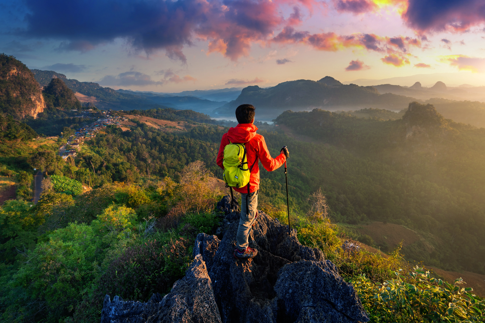
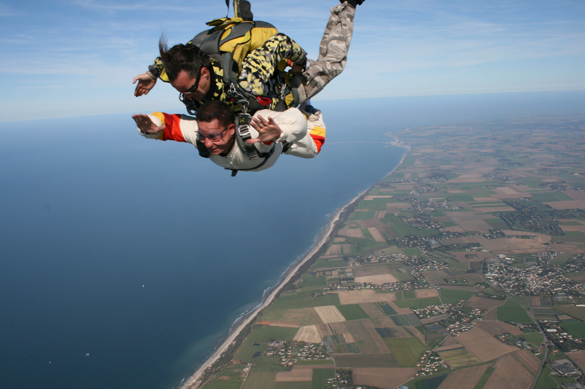
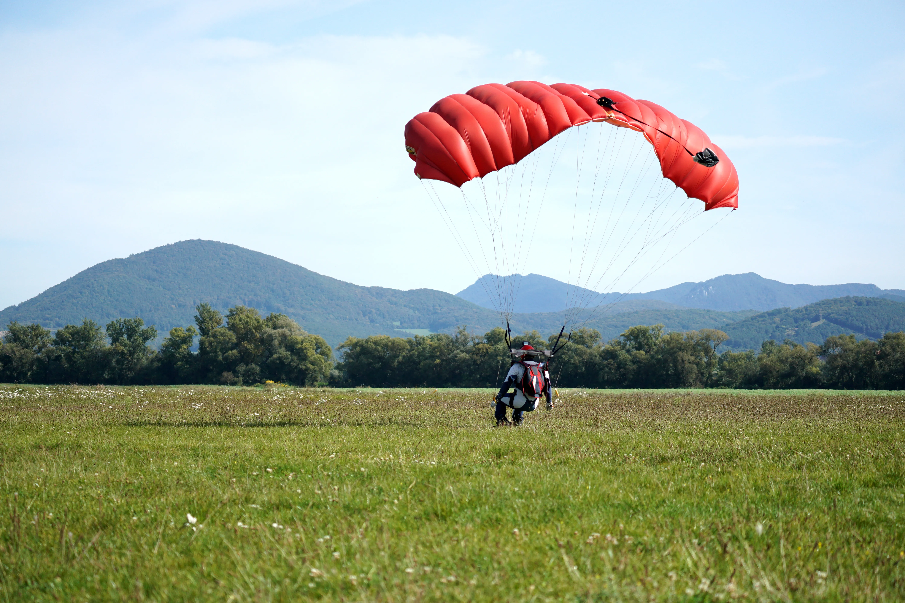

1. Trekking
Trekking is one of the top adventure sports in India, where each step is like a workout for your body and mind! Whether you’re climbing the hills of the Himalayas or wandering through the Western Ghats, there are plenty of beautiful paths that offer a mix of fun and challenge.
You’ll find yourself breathing heavily as you walk up the trails, only to be rewarded with views that’ll make you forget how much your legs hurt. It’s one of those adventure activities in India that gives you a sense of achievement—plus, you can brag about it later!
The Physical Challenge
Trekking isn't just a leisurely walk—it's a test of strength and stamina. The varying terrains and altitudes push your physical limits, making the journey as rewarding as the destination. It's a call to all those who love to push their boundaries and embrace challenges head-on.
Cultural Immersion
One of the most enriching aspects of trekking is the chance to connect with different cultures. Many routes weave through remote villages where time seems to have stood still. Here, you can learn about local traditions, taste home-cooked meals, and maybe even stay a night or two in a traditional home.
Mental Benefits
The trail offers a meditative escape from the hustle and bustle of daily life. With each step, the noise of the world fades away, leaving you with only the sounds of nature and your thoughts. It's a chance to reflect, relax, and rejuvenate your mind.
Top Trekking Destinations In India
Manali, Triund (Himachal Pradesh), Valley of Flowers (Uttarakhand), and Rajmachi (Maharashtra)
2. Water Rafting

Water rafting, also known as white-water rafting, is an extreme sport that offers thrills and excitement in every splash and turn. Imagine navigating through fast-moving rivers, battling powerful currents, and maneuvering around rocks and obstacles. It’s not just a sport—it’s an adventure.
The Thrill of the Rapids
Water rafting is all about riding the rapids. These are sections of a river where the water flows quickly over rocks, creating frothy, turbulent waves. The thrill comes from working with your team to steer the raft, keeping it balanced and moving in the right direction.
Nature’s Playground
One of the best parts of water rafting is the stunning scenery. Rivers often flow through beautiful landscapes—lush forests, towering mountains, and deep canyons. You get to experience nature up close and personal, with the rush of the water and the sounds of the wilderness all around you.
A Sport for Everyone
Whether you’re a thrill-seeker looking for the ultimate adrenaline rush or someone who wants to enjoy a fun activity with friends, water rafting has something for everyone. There are different levels of rapids, from gentle flows for beginners to intense, heart-pounding drops for the more experienced.
Water rafting is more than just a sport; it’s an adventure that brings people together, challenges you physically and mentally, and lets you experience the power and beauty of nature.
3. Skydiving
Skydiving is the ultimate adrenaline rush. Imagine stepping out of an airplane thousands of feet above the ground, free-falling at incredible speeds, and then gracefully floating down to Earth with a parachute. It’s not just a sport; it’s an experience like no other.
The Free-Fall
The most exhilarating part of skydiving is the free-fall. For around 60 seconds, you’re in complete free-fall, feeling the wind rush past you as you plummet towards the ground. It’s a sensation of pure freedom and excitement.
Safety First
Safety is a top priority in skydiving. Before your jump, you’ll receive thorough training on the ground. Instructors will teach you how to position your body and deploy your parachute. Most beginners do a tandem jump, where they are harnessed to an experienced instructor who controls the jump from start to finish.
The Parachute Ride
After the free-fall, the parachute opens, and the pace slows down. You get to enjoy the breathtaking views as you gently glide down to Earth. The silence and serenity during the parachute ride are a stark contrast to the thrilling free-fall, making the experience even more memorable.
4. Scuba Diving

Scuba diving is an extraordinary adventure that lets you explore the fascinating underwater world. Imagine swimming alongside vibrant coral reefs, colorful fish, and mysterious shipwrecks. It’s not just a sport; it’s a journey into a completely different environment.
The Magic of the Deep
One of the most captivating aspects of scuba diving is the opportunity to experience marine life up close. From playful dolphins and majestic sea turtles to tiny, intricate sea creatures, the ocean is full of wonders waiting to be discovered.
Feeling Weightless
When you dive underwater, you experience a sense of weightlessness that is truly unique. It’s like flying underwater, with the freedom to move in any direction. This feeling of floating effortlessly adds to the surreal experience of scuba diving.
Safety First
Safety is a top priority in scuba diving. Before your first dive, you’ll receive thorough training on how to use the equipment and communicate underwater. Certified instructors guide you through every step, ensuring you feel confident and safe.
5. Rock Climbing

Rock climbing is an exhilarating sport that challenges both your physical strength and mental endurance. Imagine scaling towering cliffs, gripping onto natural rock formations, and feeling the rush of adrenaline as you conquer each ascent. It's not just about reaching the top—it's about the journey, the obstacles you overcome, and the stunning views along the way.
The Climb
One of the best things about rock climbing is the variety of routes you can take. Whether you're a beginner or an expert, there's always a new challenge. Indoor climbing gyms offer a controlled environment to practice, while outdoor climbing lets you experience nature's raw beauty.
Safety First
Safety is key in rock climbing. Essential gear includes a harness, climbing shoes, and a helmet. Ropes and carabiners are used to secure yourself and prevent falls. Make sure to invest in quality gear and get proper training before heading out.
Techniques and Skills
Rock climbing isn't just about brute strength; it requires technique and finesse. Learning proper foot placement, handholds, and body positioning can make all the difference. As you gain experience, you'll develop a better sense of balance and agility.
6. Paragliding
Paragliding is an incredible sport that lets you soar through the sky like a bird. Imagine running down a hill, catching the wind, and then lifting off the ground into the open air. It’s a mix of excitement, freedom, and pure joy.
The Flight
Once you’re airborne, you’ll experience the thrill of flight. The feeling of gliding through the air, with nothing but the wind supporting you, is unlike anything else. You can enjoy stunning views from above, from rolling hills to vast oceans, and everything in between.
Getting Started
Before you take to the skies, you’ll need some training. Certified instructors teach you how to handle the paraglider, catch the wind, and control your flight. It’s important to learn the basics to ensure a safe and enjoyable experience.
Safety First
Safety is a top priority in paragliding. Always use proper gear, including a helmet and harness. Pay attention to weather conditions and follow your instructor’s advice. The right preparation makes all the difference for a safe flight.
7. Ice climbing

Ice climbing is an extreme sport that combines the thrill of climbing with the challenge of icy terrains. Imagine scaling frozen waterfalls, ice-covered rock faces, and towering glaciers. It’s not just about the climb—it’s about the adventure and the breathtaking views from the top.
The Climb
Ice climbing involves using specialized equipment like ice axes and crampons (spikes attached to your boots) to climb vertical ice formations. Each swing of the axe and step with the crampons gets you closer to the summit. The feeling of progressing upward on pure ice is incredibly satisfying.
Techniques and Skills
Ice climbing requires a mix of strength, technique, and mental focus. Learning proper techniques for swinging your ice axes, placing your feet, and maintaining balance is crucial. It’s a sport that challenges both your body and mind.
Safety First
Safety and success in ice climbing heavily rely on the use of proper gear. Essential items include ice axes, which help you grip and pull yourself up the ice, and crampons, spikes attached to your boots that provide traction. A helmet is crucial to protect your head from falling ice or rocks, while a harness and ropes are necessary to secure you and prevent falls. Equipped with the right gear, you can tackle the frozen challenges with confidence.